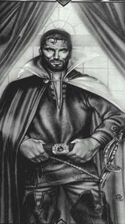

Эрик(Судя по всему мертв, убит мантикорой при защите Амбера )Синие / черные волосы, бородат, очень красив. Единственный король Амбера, умерший в битве, Эрик провел большую часть своей взрослой жизни, строя планы, как бы дорваться до трона. Усилия, конечно, имели свою цену, и для Эрика этой ценой стала паранойя, граничащая с психозом. Его ненависть к Корвину была, наверное, самой сильной в королевской семье Амбера, со временем она привела к самому поспешному действию из всех - его само коронации королем Амбера . Это действие более чем любые другие повлекло его поражение. Тем не менее, на поле брани он показал свою любовь к Амберу, отдав могущественный Талисман Закона, единственную вещь, что могла бы спасти Амбер, злейшему, но единственному, из своих врагом, кто был ее достоин. |
 |